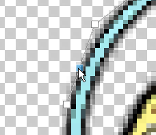
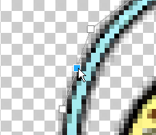
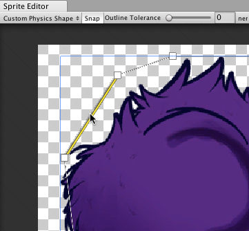
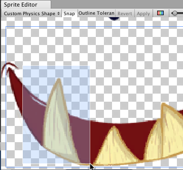
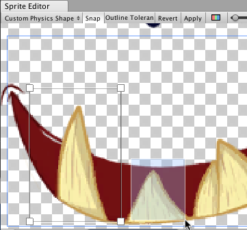
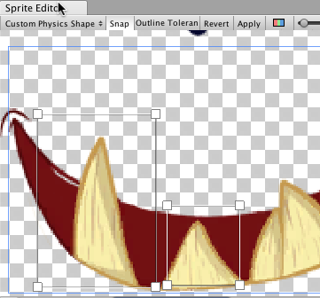

Sprite Editor：Custom Physics Shape
Sprite Editor 的 Custom Physics Shape 模块用于编辑精灵的物理形状；物理形状定义了精灵 2D 碰撞体网格的初始形状。可以通过碰撞体的组件设置进一步细化物理形状。
要打开 Custom Physics Shape 模块，请在 Project 窗口中选择要编辑的精灵。要在 Sprite Editor 窗口中打开该精灵，请在该精灵的 Inspector 窗口中选择 Sprite Editor 按钮。
要打开 Custom Physics Shape 编辑器，请在 Sprite Editor 窗口中，打开左上角的下拉菜单并选择 Custom Physics Shape 模块。
Custom Physics Shape 编辑器
Custom Physics Shape 编辑器的属性
| 属性 | 功能 |
|---|---|
| Snap | 将控制点贴靠到最近的像素。 |
| Outline Tolerance | 使用此滑动条可控制生成的轮廓贴合精灵纹理轮廓的紧密和精确程度。在最小值 (0) 时，Sprite Editor 会在精灵周围生成基本轮廓。在最大值 (1) 时，Sprite Editor 生成一个尽可能贴合精灵轮廓的轮廓。 |
| Generate | 当您单击此按钮时，Unity 会根据您设置的 Outline Tolerance 值自动创建一个物理形状轮廓。 |
| Copy | 生成或设置自定义物理形状后，单击此 Copy 按钮复制自定义物理形状。离开 Custom Physics Shape 模块或关闭 Sprite Editor 会从内存中删除复制的物理形状。 |
| Paste | 使用此按钮将复制的物理形状粘贴到当前选定的精灵。如果您尚未使用 Copy 功能复制一个物理形状的功能，此按钮不可用。Paste 将自定义物理形状复制到另一个精灵，在 Custom Physics Shape 编辑器窗口打开时，在 Project 窗口中选择该精灵。然后单击 Paste 按钮将复制的物理形状粘贴到新的精灵。当您粘贴物理形状时，如果物理形状中的某个点大于精灵的框架，Unity 会将该点限制到该精灵的框架内。 |
| Paste All | 使用此按钮将复制的物理形状粘贴到 Sprite Editor 窗口中的所有精灵，无论选择如何。如果您尚未使用 Copy 功能复制一个物理形状的功能，此按钮不可用。使用此功能可将相同的物理形状应用于同一纹理中的多个精灵（例如当纹理的 Sprite Mode 设置为 ‘Multiple’）。当您粘贴物理形状时，如果物理形状中的某个点超出精灵的框架，Unity 会将该点限制到该精灵的框架内。 |
| Revert | 撤消在编辑器窗口中所做的任何未保存的最近更改。要保存更改，请先单击 Apply。 |
| Apply | 选择此按钮可保存在编辑器窗口中所做的所有更改。 |
使用 Custom Physics Shape 编辑器
Custom Physics Shape 编辑器提供了各种功能，允许您创建或生成精灵的物理形状。有两种方法可以创建自定义物理形状：让 Unity 自动生成形状，或在编辑器窗口中手动创建和编辑形状。
生成物理形状
要让 Unity 自动生成物理形状，使其遵循原始精灵纹理的形状并考虑纹理中的透明区域，请单击 Generate 按钮。但是，您可以通过 **Outline Tolerance ** 滑动条来调整生成的物理形状与精灵纹理的紧密程度。

调整 Outline Tolerance 滑动条可细化 Unity 生成的物理形状的轮廓。增加该值会增加轮廓与精灵纹理形状的紧密程度。将滑动条保留为 0 会生成一个更松散地遵循精灵纹理的物理形状。
调整 Outline Tolerance 值后，要让 Unity 根据滑动条设置自动生成物理形状，请单击 Generate。如果在生成轮廓后调整滑动条的值，以根据新的值重新生成轮廓，请再次单击 Generate 。
手动编辑物理形状
您可以创建自己的自定义物理形状并通过两种方式对其进行编辑。第一种方式是自动生成一个轮廓，然后移动生成的轮廓的控制点以进一步细化它。或者，在 Custom Physics Shape 编辑器窗口中的任何空间上单击并拖动，以创建具有四个控制点的矩形轮廓，然后通过移动控制点或添加和删除控制点开始细化轮廓。
移动控制点
要调整网格轮廓的形状，请单击并拖动控制点。将鼠标悬停在控制点上时，控制点会变为蓝色，表示可以选择它。单击控制点并将其拖动到不同位置以调整物理形状轮廓的形状。您可以通过单击并拖动光标经过某个区域，以选择该区域内的所有控制点，从而一次选择多个控制点。之后您可以重新定位或移除所有选定的控制点。
添加/移除控制点
要添加控制点，请将光标置于轮廓边缘。沿着轮廓的边缘会出现控制点的预览。单击即可在该位置添加新控制点。要移除一个控制点，可选择该并按 Del/Command+Del 键。
|  |  |
|---|---|
| 图 1：透明控制点。 | 图 2：单击创建新控制点。 |
移动边缘
要选择物理形状的边缘而不是其控制点，请按住 Control/Ctrl 键。单击并拖动突出显示的边缘将其移动到新的位置以改变物理形状。
|  |  |
|---|---|
| 图 1：选择轮廓的边缘。 | 图 2：选择边缘后可以自由拖动和移动边缘。 |
使用多个轮廓
精灵的物理形状可以包含多个单独的轮廓。如果只有精灵的特定区域需要 2D 碰撞体网格 (Collider 2D Mesh) 进行碰撞，这将非常有用。例如，您可能希望角色仅响应其精灵特定区域上的碰撞以实现游戏的损坏机制。
在 Sprite Editor 窗口中单击并拖动任何空白区域，可创建包含 4 个控制点的新矩形轮廓。重复此步骤可以创建更多轮廓。可使用与单个物理形状轮廓相同的方式优化每个轮廓。
|  | |
|---|---|
| 图 1：单击并拖动以创建包含 4 个点的框。 | 图 2：包含 4 个控制点的框形物理形状。 |
|  |  |
| 图 3：再次单击并拖动以创建另一个框。 | 图 4：重复以上步骤创建更多单独轮廓。 |
更多提示
如果编辑了现有游戏对象正在引用的精灵的轮廓，请右键单击 Collider 2D 组件的标题，然后选择 Reset。这将更新 2D 碰撞体网格的形状。
*复制和粘贴编辑器窗口功能添加于 2020.1 NewIn20201
- 2018–05–24 页面已发布